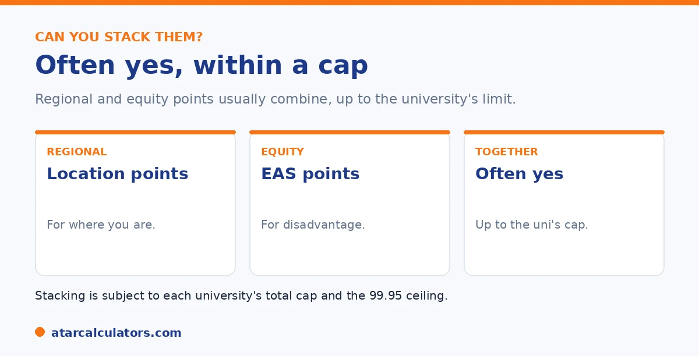

Here is the short version. Regional points and equity points, such as the Educational Access Scheme, are different categories of adjustment, so they usually combine. If you qualify for both, they typically stack toward your selection rank. But the total is capped by each university, often around 10 to 15 points, and your selection rank cannot exceed 99.95. So the exact result depends on the university.
Students who qualify for both regional and equity points often wonder if they get both. The good news is that, usually, you do.
Below is how stacking the two works, and its limits. To estimate your total, use our regional points calculator.
Key takeaways
- Regional and equity points are different categories.
- So they usually combine toward your selection rank.
- The total is capped by each university.
- Your selection rank cannot exceed 99.95.
- The exact result varies by university.
- Apply for equity points; regional points are usually automatic.
They are different categories
Regional points and equity points do different jobs. Regional points are a location adjustment, for where you live or study. Equity points, such as the Educational Access Scheme, are for educational disadvantage during Year 11 or 12.

Because they are separate categories, a student can qualify for both at once. And when you do, they usually add together.
Can you stack them? Usually yes
In most cases, yes, you can stack them. If you qualify for regional points and equity points, they typically combine toward your selection rank for a course.
So a regional student who also experienced hardship can get both kinds of boost. That can add up to a meaningful lift, especially when you are close to a cut-off.
Want to add up your points?
Try the regional points calculator →The total cap still applies
Stacking has a limit. Each university caps the total adjustments it awards, often somewhere around 10 to 15 points. So if your regional and equity points together exceed the cap, you get the cap, not the full sum.
And your selection rank still cannot go above 99.95. So stacking helps, but within these limits. See our guide on the maximum bonus points.
A worked example shows how the cap bites in practice. Suppose you qualify for four regional points and six equity points, ten in total. And your university caps adjustments at ten. In that case you get the full ten. And your selection rank is your ATAR plus ten. But if you also qualified for a further subject bonus of two points, taking your raw entitlement to twelve, the cap would still hold you to ten. And those extra two points would simply not apply at that university. This is why totting up every scheme you might be eligible for can overstate your real boost. Beyond the cap, additional eligibility adds nothing. The 99.95 ceiling adds a second limit at the top of the range. So a student already on 96 cannot gain the full ten even if the university would otherwise award it. The sensible way to plan is to add up the schemes you genuinely qualify for. Then compare that sum to the university's published cap, and take the smaller of the two as your realistic adjustment. Because caps and scheme values differ between universities, the same eligibility can produce a larger boost at one institution than another. That is worth checking course by course rather than assuming a single figure applies everywhere.
What you need to apply for
The two work differently when it comes to applying. Regional points are usually automatic, based on your postcode or school. Equity points, through the Educational Access Scheme, need a separate application, with documents.
So if you qualify for both, make sure you lodge the equity application, since that one will not happen on its own. See our EAS guide.
How regional and equity bonuses combine
At most universities, regional and equity adjustments combine. If you qualify for both, for example a regional postcode and educational disadvantage through the Educational Access Scheme, the points are added together, subject to the overall cap.
So being both regional and eligible for equity support can lift your selection rank more than either alone. Each is assessed on its own criteria, and the approved points are combined for eligible courses.
The total is still capped
Stacking helps, but only up to the total adjustment cap, commonly around 10 points. So even if your regional, equity and subject adjustments add up to more than the cap, the total added to your selection rank is limited to the cap for that course.
So there is a ceiling on stacked points. Qualifying for several schemes is useful up to that ceiling, after which extra qualifying adjustments do not add further. See the maximum adjustments guide.
Adding subject bonuses
Subject bonus points can stack on top of regional and equity adjustments as well, again up to the cap. So a student who studied rewarded subjects, lives in a regional area, and qualifies for equity support may draw on all three, limited only by the total cap.
So the different types of adjustment are cumulative, not alternatives. This is why it is worth checking every category you might qualify for, since together they can lift your selection rank to the cap.
Stacking rules vary by university
Each university sets its own stacking rules and cap, and some courses limit or exclude certain adjustments. So the way regional, equity and subject points combine, and the maximum they can reach, differs between universities and courses.
So do not assume identical stacking everywhere. Check the rules for each specific course, since qualifying for several schemes does not always mean all of them apply, or apply in full.
Why it is worth claiming everything
Because adjustments stack up to the cap, it is worth claiming every scheme you qualify for. A few extra points from combining regional, equity and subject adjustments can lift your selection rank across a cutoff that any one scheme alone would not reach.
So do not leave points on the table. Work through each category, claim what you are eligible for, and let them combine up to the cap. The effort of applying is small next to the benefit of clearing a cutoff.
How to check your combined total
To find your combined adjustment, list every scheme you qualify for that course, add their points, and apply the total cap. The capped total, added to your ATAR, gives your selection rank for that course. Remember the rules and cap can differ between courses.
So check each course separately, since the schemes that apply and the cap can vary. A selection rank calculator helps you combine your adjustments and see your rank for each course.
Common questions
Can you stack regional and equity bonus points?
Usually, yes. They are different categories of adjustment, so they typically combine toward your selection rank. The total is capped by each university, often around 10 to 15 points, and your selection rank cannot exceed 99.95.
Do regional and EAS points combine?
In most cases, yes. Regional location points and Educational Access Scheme points are separate categories, so they usually add together. The combined total is limited by the university's cap and the 99.95 ceiling.
Is there a cap on combined bonus points?
Yes. Each university caps the total adjustments it awards, often around 10 to 15 points. If your combined points exceed the cap, you get the cap. Your selection rank also cannot exceed 99.95.
Do I need to apply for both?
Not in the same way. Regional points are usually automatic, based on your postcode or school. Equity points, through the Educational Access Scheme, need a separate application with documents, so make sure you lodge that one.
Will stacking guarantee me a place?
No. Stacking can lift your selection rank, but it does not guarantee entry. You still need to meet the course requirement and compete with other applicants, within the university's cap and the 99.95 ceiling.
Add up your points
See how regional and equity points could change your selection rank. Free, and no signup.
Open the regional points calculator →Related guides
This guide is general information for students and parents, not formal admissions advice. Adjustment factors, schemes, caps and course cut-offs are set by each university and can change every year. They differ from one institution to another, and from course to course within the same institution. Always confirm the current details with the specific university and your state admissions centre (UAC, VTAC, QTAC, SATAC or TISC). A useful starting point is UAC's guide to selection rank adjustments. Reviewed by the ATARCalculators Editorial Team.